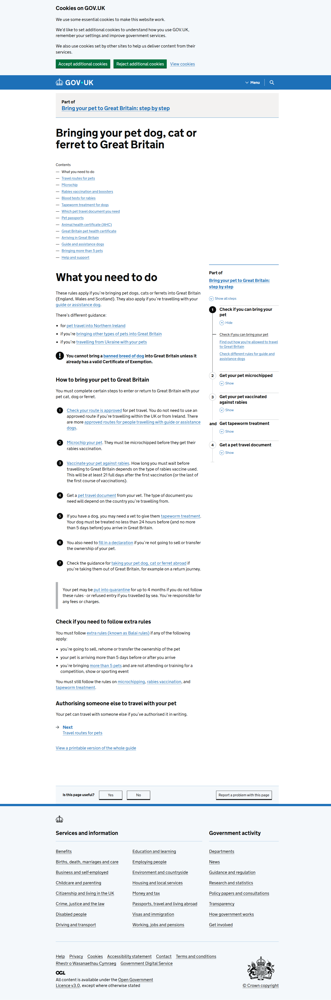
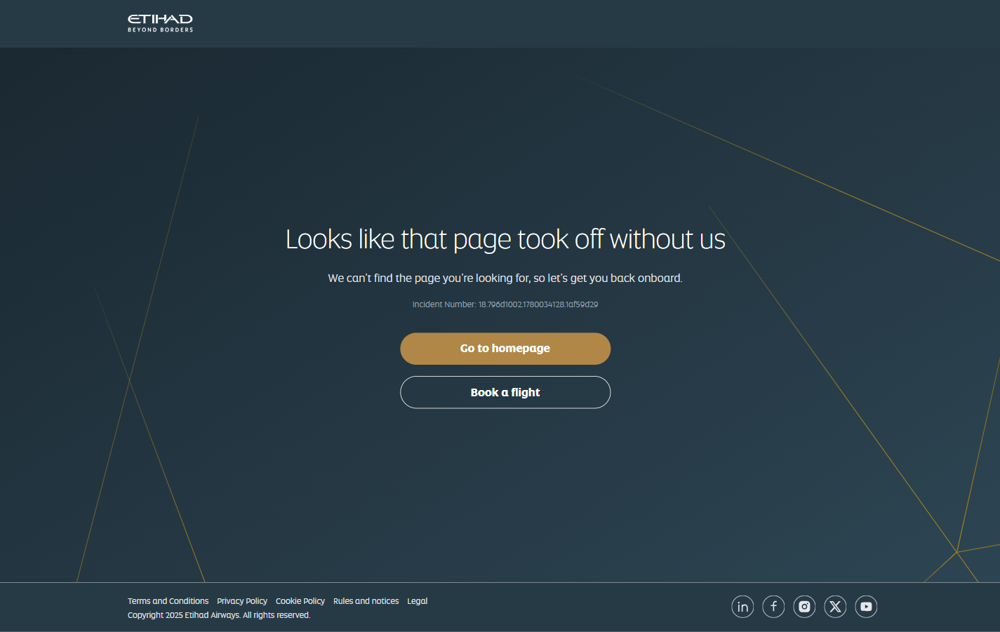

Build the Source Bank
Every regulation claim verified against a named official source — URL, date, exact quote, plain English. The only approved source of truth for anyone publishing in a regulated market.
Why this skill exists
In regulated service markets the cost of wrong information is not a lost sale — it is real harm. A pet owner who follows a confidently-written but incorrect page may have their dog confiscated at a border. A patient who reads bad procedure timing may miss a treatment window. The customer's dominant feeling on arrival at a page is the same in every regulated niche:
Most content operations skip the step that solves this. Writers paraphrase competitors, competitors paraphrase each other, and the conventional wisdom of a niche detaches from the actual regulations. The Source Bank is the discipline of breaking that loop. **The first provider to systematically prove every claim against an official source wins the market.**
The 5 mandatory fields
Every row in the Source Bank carries five fields. If any is missing, the row is not Verified.
| Field | What it is |
|---|---|
| Claim | The exact statement that will appear on a page (e.g. "rabies titer test results take 2–3 weeks"). |
| Official URL | The government, airline, or industry-body page that confirms the claim. |
| Date checked | The date the URL was last visited and the quote re-verified. |
| Exact quote | The verbatim text from the official source — copy/paste, never paraphrased. |
| Plain English | The same fact written in a sentence a customer can understand. |
The Plain English line is what writers paste into pages. The Quote is what the audit checks against. Both must mean the same thing — if the regulator says "must," the plain English does not say "may."
Statuses — three outcomes plus their failure variants
Pending — load failed or Pending — Manual) or the parser couldn't extract enough text (Manual review required). All Pending variants must be resolved by a human in a real browser before the row can be Verified.The source-authority hierarchy
For every claim, walk this list and stop at the first authority that publishes the answer. If none publish it — the row is Unverifiable.
- The regulating government body. For UAE pet import/export: MOCCAE. For each destination country: that country's animal-health authority.
- The destination country's authority. UK: APHA / gov.uk. India: AQCS / DAHD. Australia: DAFF. Canada: CFIA. South Africa: DALRRD. US: USDA APHIS.
- The airline operating the route. Emirates / Etihad / Turkish / Royal Jordanian / Air Cairo — for fees, cabin/cargo rules, breed restrictions on that specific carrier.
- A recognised industry body — only when no government source exists. IPATA for relocation standards.
- Mark Unverifiable. Do not substitute a competitor or a forum post.
The 5 gates a row must pass to be marked Verified
- Source-authority gateA
.govsite, the destination authority, the airline that operates the route, or a recognised industry body. A blog, agency, news outlet, or competitor does not pass. - Verbatim-quote gateThe Exact Quote field contains text copied directly from the page, with original punctuation. No paraphrase, no ellipsis hiding load-bearing words.
- Plain-English fidelity gateThe Plain English sentence says the same thing as the quote. A claim cannot get easier than the source intended. If the regulator says "may," the Plain English does not say "will."
- Date gateDate checked is within the last 90 days for active rows.
- Screenshot gateA full-page screenshot of the source page is saved to
skill-02/data/source-screenshots/[country]-[authority]-[claim-id]-[date].png— the proof file naming.
A row that fails any gate is downgraded to Pending and re-verified.
The manual process — always do this first
- List every claim. Pull every regulation claim from community research, competitor research, and any conflict pairs already known.
- Map each claim to a candidate URL. Walk the authority hierarchy. URL discovery is manual — never trust a search engine's first result for a niche brand.
- Visit the URL. Open the page in a real browser. Find the exact phrase. Copy the quote verbatim. Take a screenshot.
- Write the plain English. One customer-readable sentence saying the same thing as the quote.
- Record date checked + status — Verified / Unverifiable / Conflicting.
- Repeat for every claim, working from the priority list.
After at least five claims have been verified by hand, the automation spec in files/04-automation-spec.md can take over the bulk of repeated verifications. Manual never replaces automation entirely — interpretation of legal language, resolving conflicts between authorities, and deciding when to soften a claim from "must" to "may" remain human work.
The audit — verifying the verifier
After every automation run, a sub-agent samples 20% of the rows (minimum 5) and re-verifies them independently. It reads only the Claim and Official URL — never the existing Quote or Plain English — re-fetches the page, extracts the relevant text itself, and compares.
Pass threshold: 90% of sampled rows pass all four checks (URL still official · quote still present · plain English matches · status assignment correct). Below 90% → halt content writing on those categories until rows are re-verified.
Keeping the Bank current
| Trigger | Action |
|---|---|
| Date checked > 90 days | Re-verify the row; refresh date if quote is unchanged; downgrade to Pending if changed. |
| Regulator publishes a rule change | Re-verify all rows in the affected category within 7 days. |
| Audit pass rate < 90% | Halt content on affected categories; re-run manual verification on every failed row. |
| New niche launched | Run the full skill from scratch — authorities change per market. |
Real findings — Dubai pet relocation, Phase 1 (2026-05-28)
Out of 48 Phase 1 claims (23 UAE-side + 5 destinations × 5 facets), the engine produced:
| Outcome | Count | Meaning |
|---|---|---|
| Verified | 6 | 5 of 5 UK facets via gov.uk · 1 Canada landing claim via CFIA |
| Unverifiable | 20 | MOCCAE homepage doesn't carry specific fee/timeline detail; partial Canada |
| Pending | 22 | Australia / India / South Africa government sites blocked headless; some MOCCAE deep pages cert-broken |
The clearest example of the Source Bank working as designed:
The clearest example of a Conflicting / pricing case the bank surfaces:
This is the bank's most valuable kind of row — community gives a number, the regulator publishes none, and the content writer is given precise language to hedge with while still helping the reader.
Source evidence — the screenshots are the proof
A quote typed into a spreadsheet is only an assertion. The thing that makes a Source Bank row trustworthy to an auditor — or to a customer's lawyer — is a dated, full-page screenshot of the actual page, captured the day it was read. Every reachable source in this skill has one, saved to skill-02/data/source-screenshots/ under the naming convention [country]-[authority]-[claim-id]-[date].png.
On 2026-05-29 all 32 unique source URLs were re-opened in a real, headed browser (Playwright + Chromium 148, ignore_https_errors=True, waiting for networkidle) and captured full-page. 30 of 32 URLs captured cleanly (143 of 153 claim rows). The two that failed — Belgium and Jordan — could not be reached even in a real browser, and that failure is itself recorded as evidence.
What each status looks like as evidence



domain unreachable in a real browser
SOURCE-INDEX.md — the honest record that this source could not be confirmed, which is why the row stays Unverifiable.(no file — capture FAILED)The two columns of the index that carry the proof are Screenshot File (the .png name) and Screenshot Bytes (its on-disk size). A real size means a real render. A — next to a FAILED note means the page could not be reached. Both are kept; neither is faked.
The manual verification recipe (File 05)
Screenshots are only as good as the URLs behind them — and government URLs rot constantly. files/05-manual-verification-recipe.md is the method that turned 47 dead links into verified findings during the Dubai proof run. The core insight:
The 4-slot search formula
One query per authority, built from four slots plus a filter:
| Slot | Worked example | Why it matters |
|---|---|---|
| Authority + country + content type | Germany BMEL bringing pet dog cat import | The authority name never goes stale even when the domain does |
| Local-language term | Reisen mit Heimtieren · εισαγωγή σκύλου γάτας | The real page is often only indexed under the native phrase — English misses it |
site: filter | site:bmel.de | Forces an official result above the relocation blogs |
The two slots most researchers skip — the local-language term and the site: filter — are the two that make the difference.
The 3-outcome classify loop
Run each candidate URL in a real browser, because a real browser separates three outcomes a headless script blurs into one "fail":
- Loads with content → the URL is correct → run the claim-matching test → Verified candidate.
- Loads the wrong page (404, homepage, generic ministry page) → wrong page, not wrong domain → modify the query and search again. (This is how the live Etihad and flydubai 404s were caught.)
- Domain unreachable (DNS failure, timeout, persistent SSL block) → mark Unverifiable, note the exact failure type. (Belgium, Jordan, the old South Africa domain.)
The claim-matching test
Once the right page is open, every specific claim faces one question — does the page text actually say this?
| What the page shows | Status |
|---|---|
| Says it explicitly | Verified — copy the exact quote |
| Is silent on this claim | Unverifiable — the source exists but doesn't address it |
| Says something different | Conflicting — flag it, lead with the official value |
wait_for_load_state("networkidle") — closing the one gap File 05 flagged as future tooling.Walk one claim through yourself
Type a claim and a candidate URL. The walk-through shows what each gate would check.